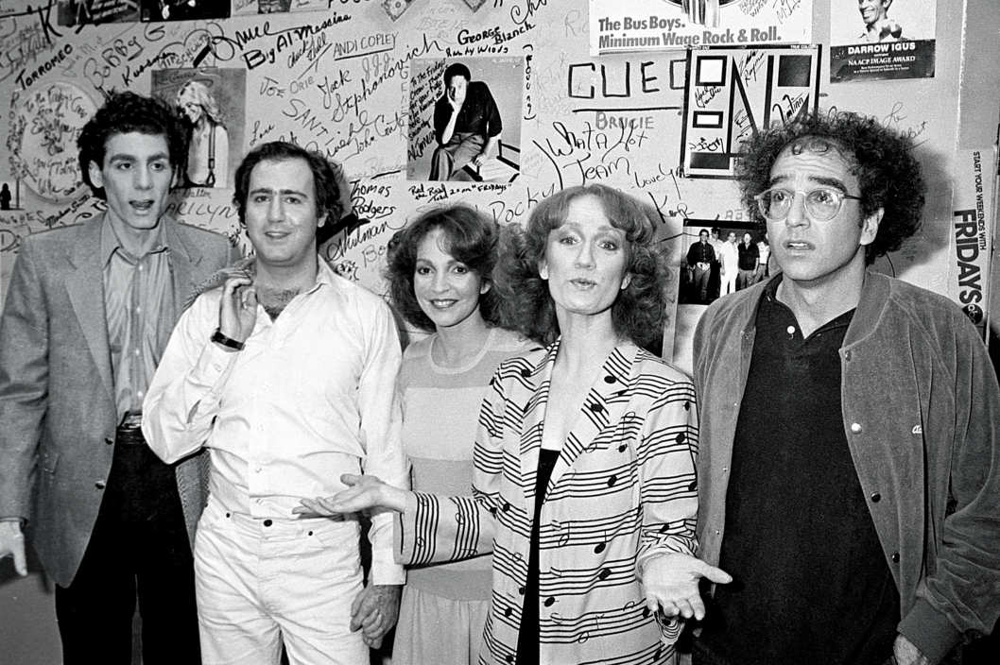

Larry David regarded a brown leather messenger bag on the floor of a studio above West 42nd Street and announced, to no one in particular: “I never had a purse before in my life. Now all of a sudden I have a purse.”
“It’s not really a purse,” his co-star Rita Wilson assured him. “It’s a satchel.”
“No,” David insisted, “it’s a purse. There’s stuff in there that’s purse-y.”
“It has a long strap,” Wilson countered.
“How far do you ever really have to carry it?” Anna Shapiro, the director, asked. “It would be a purse if you ever had to carry it to a car.”
Not finished with the subject of personal carriers, David moved on to discussing the backpack on wheels he now takes with him when he travels and his policy of always checking bags on airplanes, so he won’t have to lift a bag into an overhead bin (a movement he pantomimed dismissively, as if it revealed its own deficiency).
It was a recent Thursday afternoon, and David, Wilson, and the rest of the cast were rehearsing Fish in the Dark, David’s debut as both playwright and, excepting fifth- and eighth-grade turns in school plays, stage actor. David got the idea for the play two years ago from his friend Lloyd Braun, an entertainment executive whose father, a powerful music lawyer in Beverly Hills, had just died after a three-day hospital vigil. “We’re sitting shiva,” Braun recalls, “and Larry’s over the first day at my house, and I was telling him a whole bunch of stories of what had gone on for the last few days, because some were crazy and hilarious, like a relative flying in from wherever ’cause they want to be in show business. It’s an outlet for me. We start talking about how it’s incredible material. Larry says, ‘It’s a Broadway play.’” One might wonder why David, having mastered the half-hour sitcom as co-creator of Seinfeld and auteur of HBO’s Curb Your Enthusiasm, immediately thought of doing a play. For one thing, the limited number of settings—hospital room, shiva, etc.—suggested a stage production. But David had also been intrigued watching his friend Nora Ephron’s play Lucky Guy, imagining the thrill of live audience laughter. He went off and wrote Fish in the Dark. Later, he got an email from the producer Scott Rudin: “You wrote a play? Hello?”
It wasn’t David’s intention to star in it, but Rudin persuaded him that audiences would want him in the role (his fellow cast members include Wilson, Rosie Perez, Ben Shenkman, Lewis J. Stadlen, and Jayne Houdyshell). The producer ultimately paired David with Shapiro, who’d proved her ability to take non-theater animals like Chris Rock, inThe Motherfucker With the Hat, and Tavi Gevinson, in This Is Our Youth, and make them Broadway-ready. David has already drawn her into his reality bubble, asking her, for instance, why he needs to change his clothes when he gets to the theater. Why can’t he just be wearing the first of his five or six costumes when he arrives? “At first, I thought it was the silliest question,” Shapiro says. “But then I thought, Why couldn’t we give him a rack of clothes at his hotel? He said, ‘Yeah, I don’t like getting undressed in places.’ ”
David in rehearsals for Fish in the Dark last week. Photo: Joan Marcus
David is lanky and kinetic. At the rehearsal, between reps of a scene set around the hospital deathbed, he was restless, chewing gum, shifting his weight from side to side, pacing in circles, removing his corduroy jacket, stretching his scarf behind his head as if it were a TheraBand, and making trips to a table on which he had an array of things to put in his mouth: a pack of Trident White, a box of licorice Altoids, a yellow tin of Rescue Pastilles lozenges. David was playing a character named Norman, but he might as well have been starring in a theatrical adaptation of Curb. So pronounced is David’s comic voice, so singular his mannerisms and cadences, and so pervasive the cultural residue of Seinfeld and Curb, that pretty much anything he says or does seems like the character he’s been cultivating for years, that alternately fretful and oblivious guardian of his own idiosyncratic vision of the social contract. Jason Alexander, who made a close study of David when he was playing his alter ego, George Costanza, on Seinfeld, found that it was a physical tic of David’s that unlocked the character for him: “What Larry does is when he hears something that stops him in his tracks, he drops his jaw, takes his tongue and rather firmly presses it against the base of his bottom teeth, his head will cock to one side, he’ll do an intermittent nod, and his eyebrows go up each time he nods, as if considering the veracity of what was said to him and a number of potential responses or nonresponses.”
David is anxious about Fish in the Dark’s plot being spoiled by early disclosure, but Rudin summarizes the play, which opens for previews next month at the Cort Theatre, as being “about a guy who, with the death of a patriarch they didn’t entirely relate to as a patriarch, leaves all the internal family relationships unmoored, and he’s pinioned between his wife and his mother.” In David’s hands, this means a cascade of metastasizing pettiness during what should theoretically be a period of sober grief. The scenes I watched him rehearse managed to squeeze in many of David’s obsessions, including greed, selfishness, dishonesty, aggrievement, and the awkwardness of tipping. But besides lots of his familiar comic alienation, the play will also feature more of a traditional dramatic arc than Seinfeld, where the on-set credo was “No Hugs, No Learning,” or Curb, which was similarly distinguished by a lack of character growth.
That afternoon, as he prepared to rehearse a shiva scene, there was one point he needed to resolve. Shapiro had told him that a moment in the play, where Norman receives a “bad hello” at a funeral, was a repeat of a scene from Seinfeld. David disagreed and had checked with a writer from the sitcom, who didn’t recall it either. “I can tell you the episode, I can tell you the exchange,” said Shapiro, who knows her Seinfeld. “You do not want to mess with me, Larry David.“
“That’s funny,” David said, “’cause I remember when I wrote the idea for it, and it was at Nora Ephron’s memorial, and that was way after Seinfeld.”
“You know what,” Shapiro said, “your humor speaks to the collective–unconscious experience. I don’t know what to tell you.” David was still unconvinced, so Shapiro launched into a detailed recitation of the episode’s plot, while a member of the crew confirmed her memory via Google.
David shook his head and said he now couldn’t rehearse that part. “I had the same idea again,” he acknowledged later. He would cut the scene from the play.
David, right, with Michael Richards, Andy Kaufman, Melanie Chartoff, and Brandis Kemp at a taping of Fridays in 1981. Photo: Ron Galella/Getty Images